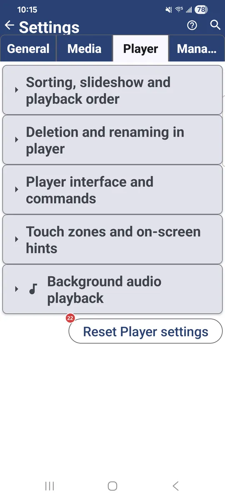
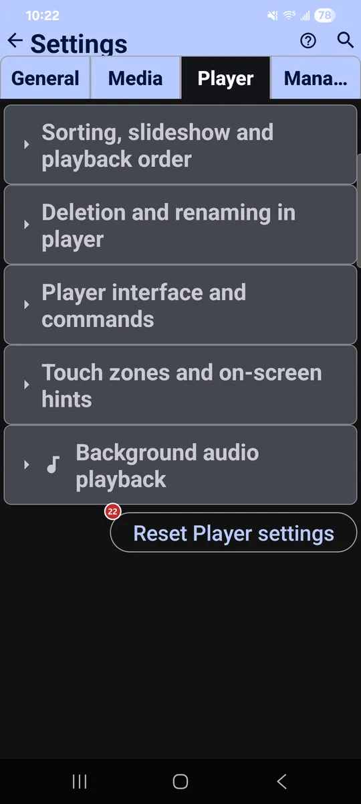

Settings: Player
What this is for
Player holds the settings for viewing and playing your files: default order, slideshow timing, what you may do to a file while viewing it, player controls, touch zones and background audio.


In this order
There is no fixed order here - every option works on its own. They are grouped below by the same section headers you see on the tab.
The elements
Sorting, slideshow and playback order
1Default sort modeSets the default order of files.
Choose manual order, or sort by name, date, size or type, each ascending or descending.
2Slideshow (s)Sets how long each image stays on screen in a slideshow.
From 1 to 3600 seconds; the default is 10. Videos play to the end or follow this timer, depending on the next option.
3Play video/audio in slideshow to endLets video and audio in a slideshow finish before moving on.
Without it, the slideshow interval decides when to move to the next file.
Deletion and renaming in player
4Allow renameAllows renaming a file from inside the player.
Handy while you sort: rename the current file without going back to the file browser.
5Allow deleteAllows deleting a file from inside the player.
Handy while you sort: remove the current file without going back to the file browser.
- Undo
- On local resources a deleted file waits in a hidden .trash folder, so you can bring it back with Undo before the resource is closed. On some network or cloud resources a deletion is permanent.
6Confirm deleteAsks before a file is deleted in the player.
Turn it off if you prefer deleting with one tap.
Player interface and commands
7Hide OS UI in fullscreenHides the status bar and navigation in fullscreen.
The picture gets the whole screen.
8Rotate player screen with OS auto-rotateLets the player follow the system auto-rotate.
It works independently of the app-wide setting, so the rest of the app can stay as it is.
9Show command panel by defaultOpens the command panel automatically when the player starts.
The panel gives quick access to copy, move, delete and other file actions.
10Player panel auto-hide duration (s)Sets how many seconds the player panel stays before it hides.
A shorter time clears the screen sooner; a longer one keeps the buttons within reach.
11Show "Black Screen" buttonAdds a button that blanks the screen while playback continues.
It sits in the player toolbar, so the screen goes dark while audio or video keeps playing.
12Enable Picture-in-PictureAdds a Picture-in-Picture button to the player.
The player also enters Picture-in-Picture on its own when you press Home (Android 12 and newer).
13Big Buttons ModeMakes player buttons larger and full-width.
It suits car head units. The top toolbar shows 5 to 9 buttons depending on the width, and the rest move to the three-dots menu. In landscape, the tall bottom panel can reduce the playback area.
14Compact player buttonsShrinks the bottom control buttons in the player.
Useful on smaller screens or when you want a less intrusive interface.
Touch zones and on-screen hints
15Disable 9-zone trackingSwitches the player from 9 touch zones to 3.
With the 9-zone grid off, the player uses three zones: previous, zoom and next. Tap the left edge to open the command panel for file actions.
16Show touch zones hint on first runShows the touch zones hint the first time you open the player.
The overlay explains the nine zones: back, copy, rename, previous, move, next, command panel, delete and slideshow.
17Always show touch zones overlayKeeps a semi-transparent grid of touch zones over the media.
It shows in fullscreen mode and helps while you learn which zone does what.
18Show Hint Next TimeShows the touch zones hint again the next time you open the player.
Use it to see the scheme once more.
Background audio playback
19Background PlaybackKeeps audio playing when the app is minimized.
Music continues in the background. If notifications are blocked, a button appears here to manage that permission.
20When leaving player or streamsChooses what happens to background audio when you leave the player or streams.
Asking every time is the default. You can also always stop the audio or always keep it playing. The choice appears once background playback is on.
21Show now-playing panelShows a mini player bar while you browse images and other files.
The bar lets you control the track that is playing and leads back to the full audio player.
Reset
22Reset Player settingsReturns only this tab to its defaults.
Settings on the other tabs keep their values. The app asks you to confirm first.